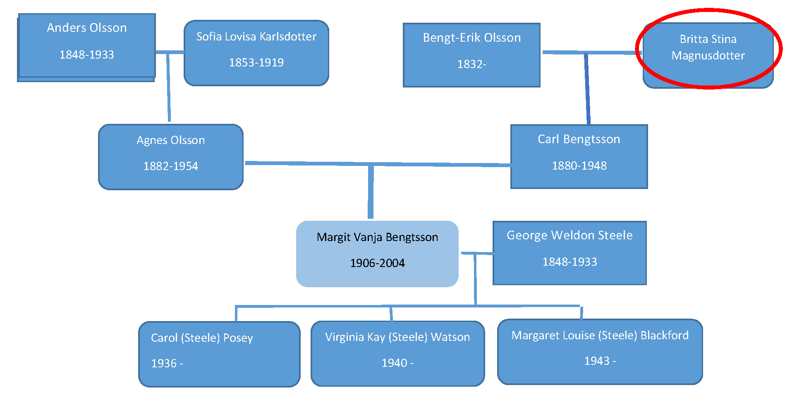

Beritta Stina Magnusdotter
- Born: ?
- Died: ?
- Mother: Kajsa (Jansdotter) Olsson (1807- )>
- Father: Magnus Olsson (1799-1876)
- Husband: Bengt Erik Olsson
Children:
- Kristina Lovisa Olsson 1869-
- Axelina Olsson 1872-
- Elizabeth Olsson 1873-1882 (9)
- Johan Magnus 1875-
- Adolf Olsson 1877-1879 (2)
- Carl Bengtsson 1880-1948
- Emanuel 1881-1881 (<1)
